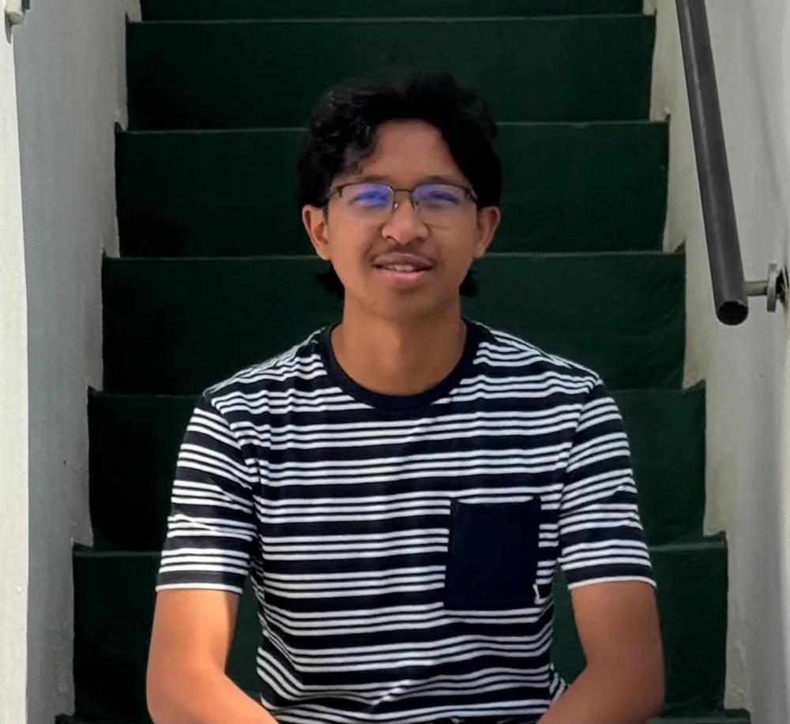
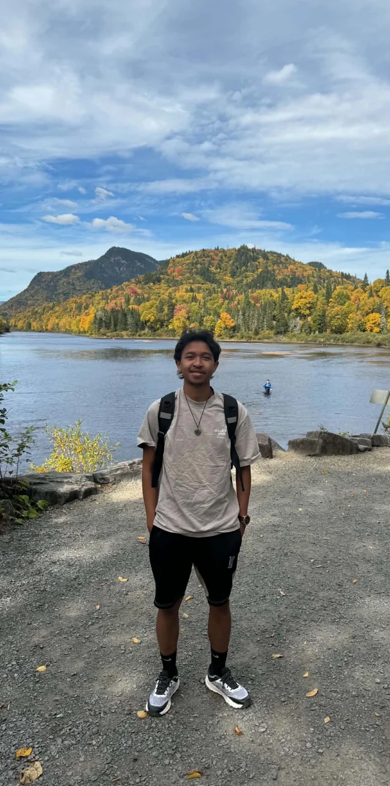
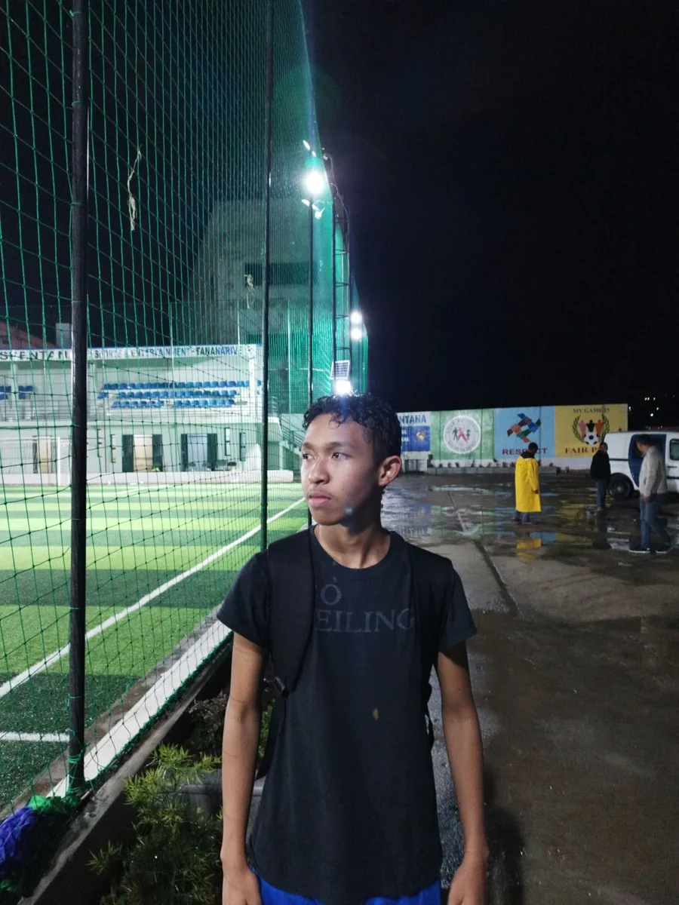
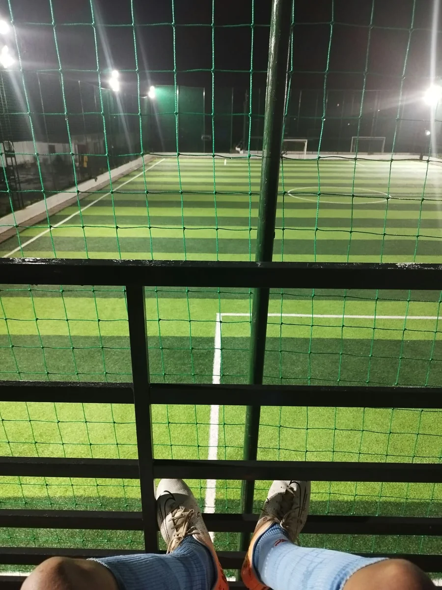
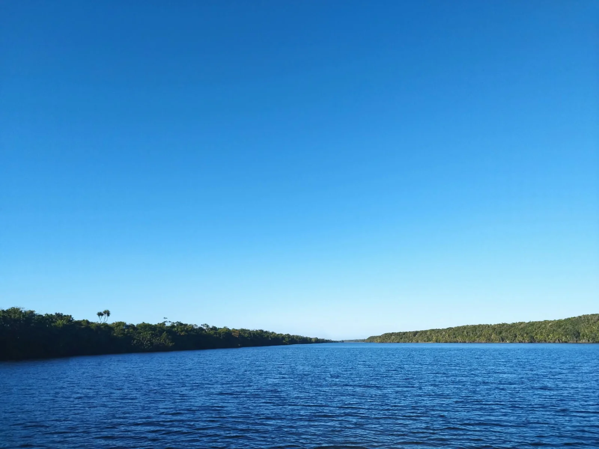

MADAGASCAR · QUÉBEC
Maheriniaina Valisoa Randriamiharimanana
Étudiant en études internationales
à l’Université Laval
Comprendre les échanges. Explorer les possibilités.
Construire un projet entre Madagascar et le Canada.

De la gestion
aux horizons
internationaux.
Mon intérêt pour le monde des affaires m’a conduit de Madagascar au Québec, avec l’envie de relier entrepreneuriat et échanges internationaux.
Après un baccalauréat malgache scientifique, j’ai suivi une licence en Management et Développement d’Entreprise à l’ISCAM Business School. J’y ai ensuite poursuivi mon parcours en Création et Développement des Affaires.
Aujourd’hui étudiant à la maîtrise en études internationales à l’Université Laval, je souhaite approfondir ma compréhension des enjeux économiques mondiaux et donner une dimension internationale à mes projets.
Un parcours qui
élargit les perspectives.
Une formation en gestion, enrichie par une ouverture sur les affaires internationales.
- 01MADAGASCAR
Baccalauréat scientifique
Une formation initiale qui a nourri ma rigueur, mon esprit analytique et ma méthode de travail.
- 02ISCAM BUSINESS SCHOOLMadagascar
Management et Développement d’Entreprise
Un parcours de licence pour rapprocher l’analyse de la pratique managériale.
- 03ISCAM BUSINESS SCHOOLMadagascar
Création et Développement des Affaires
Une poursuite d’études en master, autour de la stratégie, de la finance d’entreprise et de l’entrepreneuriat.
- 04UNIVERSITÉ LAVALQuébec, CanadaFORMATION ACTUELLE
Maîtrise en études internationales
Une ouverture sur les enjeux économiques mondiaux et les échanges internationaux.
Rapprocher
Madagascar
et le Canada.
Une plateforme de facilitation d’import-export pour valoriser des produits à forte valeur ajoutée.
En parler ensembleÀ terme, je souhaite créer à Madagascar une plateforme qui facilite les échanges avec le Canada et favorise des partenariats commerciaux durables.
Cette ambition guide mon parcours : mieux comprendre les marchés, la négociation internationale et le financement de projets pour préparer une initiative ancrée dans les besoins des deux pays.
Une ambition à développer : la plateforme n’est pas encore lancée.
Les secteurs envisagés
- 01Produits agroalimentaires bio
- 02Textile artisanal
- 03Technologies vertes
Le terrain.
Le grand air.
Le soccer est l’une de mes passions. La randonnée et les paysages de plein air ont aussi leur place dans mon quotidien.







Une idée,
une conversation,
un point de départ.
Entrepreneuriat, études internationales ou projet Canada–Madagascar : je serai heureux d’échanger avec vous.